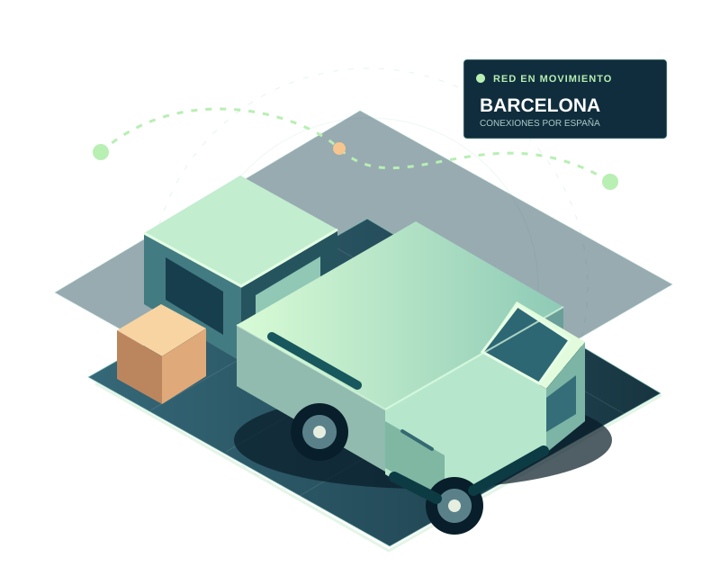

SECTOR / 01
ÁREA ESPECIALIZADA
Distribución farmacéutica y hospitalaria.
Recogidas y entregas de productos farmacéuticos y suministros sanitarios para farmacias, hospitales y centros de salud, con actividad en Barcelona y Girona.
TRANSPORTE · LOGÍSTICA · DISTRIBUCIÓN
Una propuesta digital para Ramura Corporate. Transporte directo, logística especializada y conexiones para mover mercancías por toda España.
✳ Diseño conceptual independiente, no una web corporativa oficial.

01 / ESPECIALIDADES
Una web puede reflejar la experiencia adquirida en entornos donde la coordinación y la documentación forman parte de cada operación.
Recogidas y entregas de productos farmacéuticos y suministros sanitarios para farmacias, hospitales y centros de salud, con actividad en Barcelona y Girona.
Recogida y entrega de mercancía en terminales de carga, coordinación con agentes de handling, accesos, documentación e incidencias operativas.
Contenido orientativo: esta demostración no afirma disponer de certificaciones, cadena de frío, despacho de aduanas propio ni servicios especiales garantizados.
02 / SOLUCIONES
Desde una entrega de fábrica a fábrica hasta un envío nacional mediante operadores colaboradores.
Recogida y entrega puerta a puerta, con transporte dedicado según el origen, el destino y el tipo de mercancía.
DIRECTO · NACIONALServicios de reparto y distribución de paquetería para empresas, operadores de transporte y clientes profesionales.
REPARTO · RUTASRecogida de paquetes y gestión del envío al destino a través de empresas colaboradoras de transporte.
RECOGIDA · COLABORADORES03 / UNA FORMA DE TRABAJAR
Una web moderna permite explicar con claridad cómo se adapta el tipo de servicio al envío, sin prometer flotas ni capacidades que todavía no se han concretado.
Ver un ejemplo interactivo ↗Origen, destino, mercancía y particularidades.
Transporte dedicado, distribución o red colaboradora.
Planificación y comunicación para cada servicio.
04 / DEMOSTRACIÓN INTERACTIVA
Prueba dos ideas de funcionalidades. Son simulaciones locales: ni precios, ni envíos reales, ni información enviada a servidores.
Selecciona el servicio y el destino. La web mostrará un flujo de trabajo ilustrativo.
Recogida en origen, transporte dedicado y entrega directa en destino.
Pulsa para avanzar los estados de un paquete completamente ficticio.
Estado ficticio: solicitud registrada.
ⓘ Los módulos no se conectan con Ramura, clientes, transportistas ni sistemas reales. No hay contratación, seguimiento ni presupuestos efectivos.
SOLO ES EL PRINCIPIO
Esta muestra enseña cómo podría presentarse Ramura Corporate en Internet. Una web oficial requeriría decidir contenidos, servicios y funcionalidades con la empresa.
Volver al inicio ↑